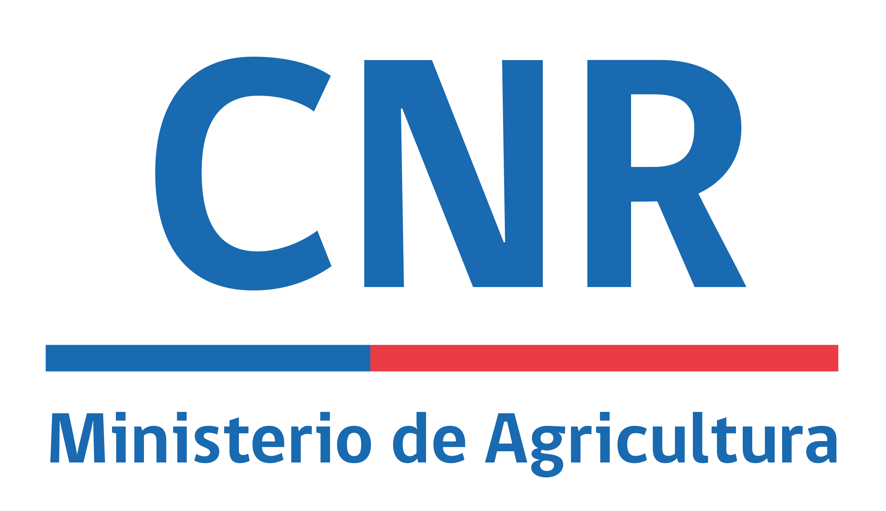

Comisión Nacional de Riego
Riego y obras hidráulicasSubsidios para tecnificación del riego, drenaje y obras de acumulación de agua.
Ver convocatorias oficiales ↗Reunimos oportunidades publicadas por instituciones y organismos oficiales. Revise siempre las bases antes de postular y confirme la información en el sitio de origen.
INDAP concentra la mayor cantidad de oportunidades vigentes para la Agricultura Familiar Campesina. Revise los programas disponibles y consulte los requisitos directamente en su plataforma oficial.

Subsidios para tecnificación del riego, drenaje y obras de acumulación de agua.
Ver convocatorias oficiales ↗
Bonos, asistencia técnica, programas de suelos y créditos para pequeños agricultores.
Ver convocatorias oficiales ↗
Innovación agrícola, sostenibilidad, nuevos cultivos y soluciones tecnológicas.
Ver convocatorias oficiales ↗
Escalamiento productivo, economía circular, eficiencia energética y exportación.
Ver convocatorias oficiales ↗
Cooperación internacional y oportunidades para proyectos con impacto sostenible.
Ver convocatorias oficiales ↗
Programas y oportunidades de cooperación para innovación y desarrollo agrícola.
Ver convocatorias oficiales ↗Las revisamos periódicamente. Se mostrarán aquí cuando encontremos oportunidades vigentes y verificables.